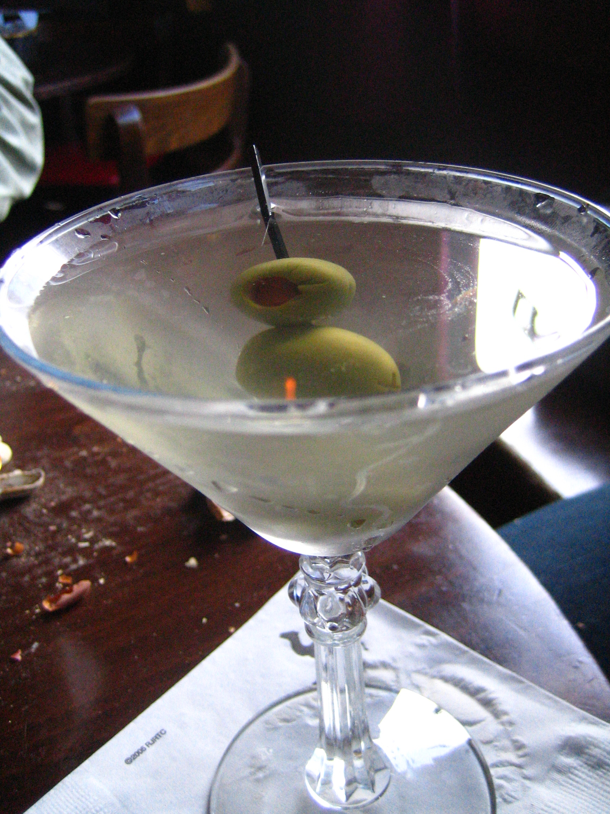
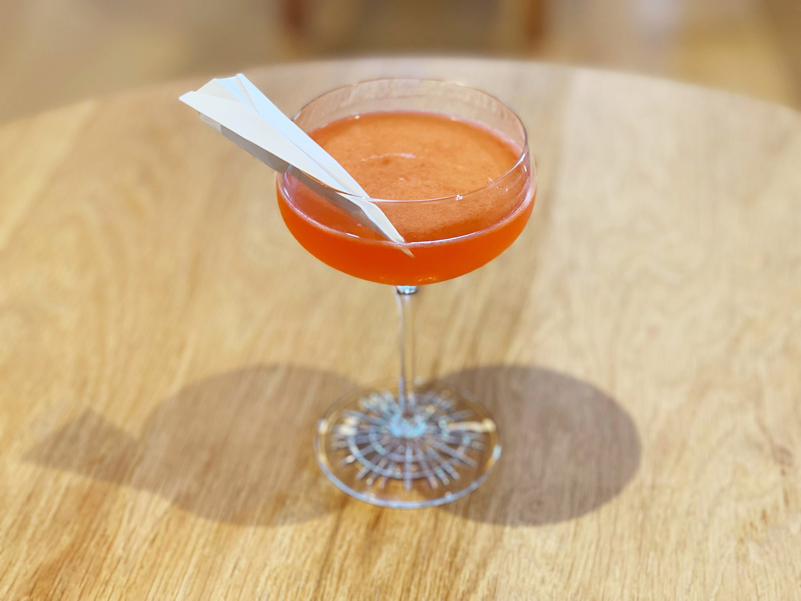

Corpse Reviver
Ingredients:
- Absinthe, to rinse
- 3/4 ounce London dry gin
- 3/4 ounce Lillet blanc
- 3/4 ounce orange liqueur
- 3/4 ounce lemon juice, freshly squeezed
Steps:
- Rinse the inside of a chilled coupe or cocktail glass with absinthe, discard the excess and set the glass aside.
- Add the gin, Lillet blanc, orange liqueur, and lemon juice into a shaker with ice and shake until well-chilled.
- Strain into the prepared glass.
Dirty Martini
Ingredients:
- 2 ½ ounces gin or vodka
- 1/2 ounce dry vermouth
- 1/2 ounce olive brine
- Garnish: 2 to 4 olives
Steps:
- Add the gin or vodka, vermouth, and olive brine to a shaker filled with ice.
- Shake for 15–20 seconds until well chilled.
- Double strain through a fine mesh strainer into a chilled cocktail glass.
- Garnish with a skewer of olives.

Paper Plane
Ingredients:
- 3/4 ounce bourbon
- 3/4 ounce Aperol
- 3/4 ounce Amaro Nonino Quintessential
- 3/4 ounce lemon juice, freshly squeezed
Steps:
- Add the bourbon, Aperol, Amaro Nonino, and lemon juice into a shaker with ice and shake until well-chilled.
- Strain into a coupe glass.
